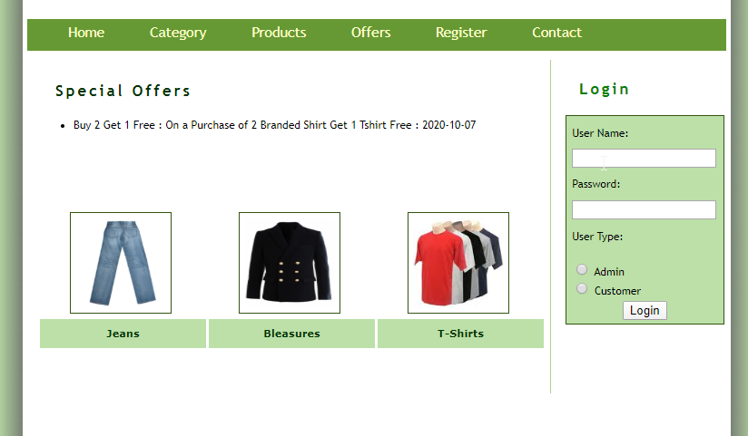

A Novel high Step-up DC/DC converter based on Integrating coupled Inductor and Switched capacitor Techniques for Renewable Energy Applications.
4 Months
It was a Major Project.
The suggested converter will be suitable for DG systems based on Renewable energy sources which acquire high step-up voltage transfer gain. In this converter, the energy stored in the leakage inductance is recycled to improve the performance. Furthermore, votage stress on the main power switch is reduced. Therefore, a switch with a low on-state resistance can be chosen. the steady-state operation of the converter has been analyzed in detail. Finally, with this converter, a hardware prototype is implemented which converts 40-V input voltage into 400-V output voltage.
mygarmentsshop.com.
2 Months
It was a Major Project.
This project aims at creating an online store for displaying and selling garments. This website showcases different shirts and bottom wear from where the user can purchase any item he/she wants. The date related to each item are store into the default Django database i.e SQLite which can be redirected to any other databases like ORACLE or MYSQL. The site provides all facilities like product search, sending emails to customers, creating consumer logins and admin panel.
Conway's Game of Life
1 Month
It was a Major Project.
This is a major project in my Master's degree. we were asked to build Conway's Game of Life using its required conditions. The Game of life is about a cellular automation divised by the British mathematician John Hoorton conway in 1970. It is a zero player game, which means its evolution is determined by the some conditions. Each cell has 8 neighbours and there are some conditions which will tell us that which cell will be alive in the next generation. One interacts with the game of life by creating an initial configuration and observing how it evolves.
Randomized Queues
3 days
It was a Minor Project.
This is a minor project which was asked in my Algorithms and Data Structures (ADS) course in my Master's. we were asked to implement enque and deque techniques using queue and the required output was to print a Randomized queue based on the inputs given.